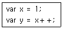
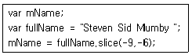

멀티미디어콘텐츠제작전문가(구) (2010-03-07 기출문제)
1과목: 멀티미디어개론
1. “정보 시스템은 적절한 방법으로 주어진 사용자에게 정보 서비스를 제공해야 한다.”는 정보의 속성 중 무엇을 정의한 것인가?
- 무결성
- 비밀성
- 가용성
- 부인방지
(정답률: 알수없음)

2. 다음 중 웹 브라우저에서 지원하지 않는 서비스는?
- HTTP(Hyper Text Transport Protocol)
- FTP(File Transfer Protocol)
- SNMP(Simple Network Management Protocol)
(정답률: 알수없음)
3. 전기통신의 개선과 합리적 이용, 전기통신 업무의 이용증대와 효율적 운용, 그리고 세계 전기통신의 균형 있는 발전을 위해 국제간 협력 증진 등 공동 노력을 추구할 목적으로 설립한 기구는?
- ISO
- BSI
- CEN
- ITU
(정답률: 알수없음)
4. EIA의 표준화에서 나온 일반적인 인터페이스 표준으로 컴퓨터 및 대부분의 통신기기에 부착되는 직렬 전송 방식은?
- RS-232C
- ISO1177
- X.27
- V.28
(정답률: 알수없음)
5. ftp에 관한 설명으로 옳지 않은 것은?
- ftp는 파일 전송 프로토콜이다.
- 포트 69로 UDP의 서비스를 이용한다.
- ftp는 “ftp://”로 시작되는 URL을 갖는다.
- put 명령으로 파일을 업로드 할 수 있다.
(정답률: 알수없음)
6. IPv6에 대한 설명으로 거리가 가장 먼 것은?
- 새로운 기술이나 응용분야에 의해 요구되는 프로토콜의 확장을 허용하도록 설계되었다.
- IPv6는 3개의 주소 유형 즉, 유니캐스트, 애니캐스트, 멀티 캐스트로 구성되어 있다.
- IPv6는 헤더가 확장되어, 패킷의 출처 인증, 데이터 무결성의 보장 및 비밀의 보장 등을 위한 메커니즘을 지정할 수 있다.
- IPv6에서는 64비트로 표현되어 264개의 주소가 가능하다.
(정답률: 알수없음)
7. 도메인 이름에 대한 설명으로 옳지 않은 것은?
- 도메인의 각 부분은 서브도메인이라 하고 이는 점(.)으로 구분한다.
- com(Commercial)은 최상위 도메인이며 영리 단체나 기업을 의미한다.
- 가장 오른쪽에 있는 서브 도메인을 최상위 도메인 또는 존(Zone)이라 한다.
- 도메인은 항상 4개의 서브 도메인으로 구성되어 있다.
(정답률: 알수없음)
8. MPEG-4 기능에 대한 설명으로 옳지 않은 것은?
- 객체 단위로 시간적, 공간적 압축 방법을 적용할 수 있게 됨에 따라 더 높은 압축률을 적용할 수 있다.
- 많은 압축 요소들을 표준에 메뉴 형식으로 수용해 응용에 따라 선택해 사용하도록 하고 있다.
- 무선통신 환경 등을 고려해 전송 오류가 많은 환경에서도 내성이 강하도록 하고 있다.
- 멀티미디어 정보의 검색을 용이하게 하는 압축표준으로 디지털 라이브러리 분야에 이용된다.
(정답률: 알수없음)
9. IP주소 203.240.100.1은 어느 클래스에 속하는가?
- 클래스 A
- 클래스 B
- 클래스 C
- 클래스 D
(정답률: 알수없음)
10. 멀티캐스팅을 위한 것으로 이 클래스는 netid와 hostid가 없으며, 전체 주소가 멀티캐스팅을 위해 사용되는 것은?
- Class A
- Class B
- Class C
- Class D
(정답률: 알수없음)
11. OSI 모델 계층에서 프리젠테이션 계층의 주요 기능은?
- 정보 교환 및 중계 기능, 경로제어, 흐름제어 기능
- 응용 프로세스간의 송수신제어 및 동기제어
- 정보의 형식 설정과 코드 교환, 암호화, 판독
- 응용 프로세스간의 정보 교환 및 이용자 간의 통신, 전자 사서함, 파일 전송
(정답률: 알수없음)
12. 다음 중 아날로그 TV 표준형식으로 거리가 가장 먼 것은?
- NTSC
- PAL
- SECAM
- HDTV
(정답률: 알수없음)
13. 이동하면서도 초고속인터넷을 이용할 수 있는 무선휴대 인터넷을 무엇이라 하는가?
- WIBRO
- DMB
- ISDN
- VDSL
(정답률: 알수없음)
14. 사운드를 구성하는 3요소에 들어가지 않는 것은?
- 주파수
- 주기
- 진폭
- 음색
(정답률: 알수없음)
15. 다음 이미지 파일 포맷 중 벡터 정보를 표현할 수 없는 것은?
- AI
- EPS
- WMF
- TIFF
(정답률: 알수없음)
16. 다양한 형식의 멀티미디어 데이터를 공유하고 호환하기 위해 필요한 방법은?
- 표준화
- 최소화
- 정교화
- 암호화
(정답률: 알수없음)
17. 부호화된 디지털정보를 목적에 맞게 편집 및 가공하는데 필요한 장치를 무엇이라고 하는가?
- ADC
- DAC
- Mixer
- DSP
(정답률: 알수없음)
18. DVD에 대한 설명으로 옳지 않은 것은?
- 저장용량은 약 4.7GB이며, 17GB이상도 기록 가능하다.
- 원래 비디오 데이터를 저장하기 위해 개발되었다.
- 음악 등을 기록하기 위한 DVD Audio도 개발되었다.
- 기록면이 단면만 있으므로 CD와 유사하다.
(정답률: 알수없음)
19. 모니터에서 목적지를 조금 벗어난 근처 지점에 전자빔이 잘못 도달함으로써 글자가 선명하지 못하고 이미지가 왜곡되는 현상을 무엇이라 하는가?
- 미스 컴버전스(Mis-Convergence)
- 지오메트릭 디스토션(Geometric Distortion)
- 핀 쿠션(Pin Cushion)
- 모아레(Moire)
(정답률: 알수없음)
20. 맥락 인식 모바일 증강 현실 환경의 사용자 인터페이스의 특징 중 가장 거리가 먼 것은?
- 모바일 플랫폼
- 직관적 사용자 인터페이스 증강
- 깊이 인지
- 맥락 인식
(정답률: 알수없음)
21. 정보 보안 분야에서 신뢰할 수 있는 사람으로 속여 다른 사람들로 하여금 자신의 목적을 위해 행동하도록 만드는 기술은?
- 사회공학
- 해킹
- 크래킹
- 방화벽
(정답률: 알수없음)
22. 멀티미디어 스트리밍 기술에 대한 설명으로 틀린 것은?
- 데이터 전체가 완전히 전송될 때까지 기다리지 않고, 각 데이터 블록이 도착하는 대로 재생을 시작하는 방식이다.
- 스트리밍 형태의 서비스는 버퍼에 영구적으로 저장됨으로 사용자가 본 데이터는 여러 번 볼 수 있다.
- 저장 후 재생하는 방법에 비해 저장 공간을 거의 필요로 하지 않는다.
- 데이터 블록이 만들어지는 대로 클라이언트 측으로 전송 하여 바로 재생할 수 있으므로 실시간 방속이 가능하다.
(정답률: 알수없음)
23. 다음 중 시각기반 증강현실에서 사용되는 주요 기술로 가장 거리가 먼 것은?
- 상호작용
- 추적
- 영상 정합
- 사용자 프로파일
(정답률: 알수없음)
24. 웹에서 정보를 분류하여 설계할 때 포함되는 내용을 열거하지 않아도 그 내용을 예상할 수 있도록 분류된 항목을 지칭 하는 것을 무엇이라 하는가?
- 그리드 구조
- 네비게이션 시스템
- 정보구조
- 레이블링 시스템
(정답률: 알수없음)
25. UNIX의 4가지 주요 요소가 아닌 것은?
- kernel
- shell
- file system
- client/sever
(정답률: 알수없음)
2과목: 멀티미디어기획및디자인
26. 디자인의 미적 원리 중 균형을 구성하는 요소인 대칭에 대해 설명한 것은?
- 도형에서 서로 대응하는 각 부분이 서로 점이나 직선 또는 면을 개입시켜 서로 같은 거리에 배치된 상태를 말한다.
- 대칭을 뜻하는 영어는 symmetry 이다.
- 어느 기준에 대해 일정한 비율을 유지하는 미적조화를 의미한다.
- 대칭은 크게 수평 대칭과 상하 대칭으로 나누어진다.
(정답률: 알수없음)
27. 컴퓨터 그래픽스에 대한 설명으로 거리가 가장 먼 것은?
- 실물 그 자체의 재현은 물론 명암, 질감, 색감, 형태 등을 의도하는 대로 자유롭게 바꿀 수 있다.
- 제작물은 디자이너의 능력, 감각 등을 통해 무한한 이미지 창출은 물론 영구적인 보존이 가능하다.
- 제작 시 세밀한 부분이나 작은 시간의 차이도 표현할 수 있지만 수정이 어렵고 비용이나 시간이 많이 든다.
- 인쇄 출력 시 모니터의 색상과 실제 출력 색상이 다르게 나오므로 색 보정이 필요하다.
(정답률: 알수없음)
28. 인터페이스 디자인에서 중요한 정보를 돋보이게 하는 방법으로 적절하지 않은 것은?
- 깜박임(Flashing)
- 애니메이션(Animation)
- 밑줄(Underlining)
- 흐리게 하기(Blur)
(정답률: 알수없음)
29. 다음 디자인 요소 중 시각적 요소에 속하지 않는 것은?
- 형태
- 색채
- 방향감
- 질감
(정답률: 알수없음)
30. 멀티미디어 인터페이스 디자인에서 색 표현 방식으로 적합하지 않은 방식은?
- RGB
- YUV
- HSB
- CMYK
(정답률: 알수없음)
31. “인터페이스 디자인의 대표적인 기법으로 그 단어가 갖는 원래 의미는 숨긴채 비유하는 형상만 드러내어 표현하려는 대상을 설명하거나 그 특징을 묘사한 것”에 해당하는 용어는?
- 그리드(Grid)
- 메타포(Metaphor)
- 핫스폿(Hotspot)
- 하이퍼미디어(Hyper media)
(정답률: 알수없음)
32. 디자인의 기본요소를 바르게 나타낸 것은?
- 방법, 용도, 필요성
- 심미성, 합목적성, 독창성
- 색, 형, 질감, 빛과 운동
- 통일과 변화, 조화, 균형
(정답률: 알수없음)
33. 타이포그래피(Typography)에 관한 내용으로 옳지 않은 것은?
- 타입(Type)과 그래피(Graphy)의 합성어이다.
- 디자인 된 문자를 활용한 문자 표현이나 작품을 레터링(Lettering)이라고 한다.
- 타입(Type)은 문자 또는 활자의 의미를 갖는다.
- 타이포그래피(Typography)의 넓은 의미로는 인쇄술을 의미하기도 한다.
(정답률: 알수없음)
34. 색이 가지는 3요소가 아닌 것은?
- 색상
- 채도
- 명도
- 명암
(정답률: 알수없음)
35. 구성의 기본원리 중 율동(Rhythm)에 대한 설명으로 잘못된것은?
- 점증 : 조화적인 단계에 의하여 일정한 질서를 가진 자연적인 순서의 계열로써 유사한 일련의 흐름을 나타내는 것이다.
- 반복 : 일정한 간격을 두고 되풀이되는 것을 말한다.
- 방사 : 한 개의 점을 중심으로 형태 구성요소가 여러 방향으로 퍼져나가거나 안으로 모아지는 경우에 생기는 리듬을 말한다.
- 연속 : 통일성을 전제로 한 동적인 변화만을 말한다.
(정답률: 알수없음)
36. 구성형식에 의한 디자인분류 중 평면디자인(2차원적)에 속하지 않은 것은?
- 일러스트레이션
- 편집디자인
- 포장디자인
- 타이포그래피
(정답률: 알수없음)
37. 편집 디자인을 형태별로 분류할 경우 그 형식이 나머지와 다른 하나는?
- 명함
- 카탈로그
- 잡지
- 매뉴얼
(정답률: 알수없음)
38. 평면디자인과 입체디자인에서 모두 볼 수 있는 개념요소의 종류로 옳은 것은?
- 점, 선, 면, 양감
- 깊이, 너비, 길이
- 꼭지점, 모서리, 면
- 수평면, 수직면, 측면
(정답률: 알수없음)
39. 색의 성질에 대한 설명으로 잘못 된 것은?
- 연두, 녹색, 보라는 중성색이다.
- 파랑, 청록, 남색은 차가운 느낌을 주기 때문에 한색이라고 한다.
- 난색이 한색보다 후퇴되어 보인다.
- 밝은 색은 실제보다 크게 보인다.
(정답률: 알수없음)
40. 점을 생성하기 위한 방법이 아닌 것은?
- 입체와 면의 교차
- 선과 선의 교차
- 선의 양쪽 끝
- 면과 선의 교차
(정답률: 알수없음)
41. 게슈탈트의 4법칙 중 “보다 가까이 있는 두 개 이상의 요소들이 패턴이나 그룹으로 보여질 가능성이 크다”는 법칙을 무엇이라 하는가?
- 유사성
- 폐쇄성
- 접근성
- 연속성
(정답률: 알수없음)
42. 러프 스케치에 대한 설명으로 틀린 것은?
- 일반적으로 대략적인 스케치를 말한다.
- 전체 및 부분에 대한 형태, 색상, 질감 등의 정확한 스케치를 요구한다.
- 선에 의한 표현 및 간단한 재료표현을 병행함으로서 효과적인 입체표현을 한다.
- 조형적인 부분과 구상에 대한 아이디어를 비교 및 검토하기 위한 스케치이다.
(정답률: 알수없음)
43. 디자인 원리의 하나로 두 영역간의 조화로운 관계라고 할수 있으며 구성요소간의 조화와 균형을 결정하는 것은?
- 스케일
- 대비
- 비례
- 강조
(정답률: 알수없음)
44. 비례의 3가지 유형이 아닌 것은?
- 구조적 비례
- 산술적 비례
- 조화적 비례
- 기하학적 비례
(정답률: 알수없음)
45. 작품의 주제, 사건, 장면, 대사 등을 일정한 영화적 구성 하에 써 놓은 것은?
- 프로그래밍 차트
- 그래픽 인터페이스
- 시나리오
- 기획서
(정답률: 알수없음)
46. 먼셀의 색상환에서 기본 5원색에 해당되지 않는 것은?
- 빨강
- 노랑
- 보라
- 주황
(정답률: 알수없음)
47. 이미 만들어진 활자를 이용하는 것이 아니라 직접 드로잉을 통해 글자를 만드는 것을 무엇이라고 하는가?
- 폰트
- 로고 타입
- 레터링
- 시그니처
(정답률: 알수없음)
48. 색의 혼합에 대한 설명으로 틀린 것은?
- 3차색으로 갈수록 원색에 가까워진다.
- 가산 혼합의 2차색은 색료의 3원색이다.
- 중간 혼합은 생리적인 혼합이라 할 수 있다.
- 원색은 다른 색과 혼합해서 만들어 낼 수 없는 색이다.
(정답률: 알수없음)
49. 다음은 “루빈스의 컵” 이라고 하는 착시 도형이다. 이 착시의 원리로 옳은 것은?
- 면적의 착시
- 바탕과 도형의 착시
- 크기의 착시
- 대비의 착시
(정답률: 알수없음)
50. 시각 법칙에서 “정의 잔상” 중 원래의 자극과 밝기이나 색은 보색으로 나타나는 현상은?
- 헤링의 잔상
- 보링의 잔상
- 스윈들의 잔상
- 푸르킨예의 잔상
(정답률: 알수없음)
3과목: 멀티미디어저작
51. 객체지향 개념에서 함수나 프로시저에 해당하는 연산기능은?
- 모듈
- 메시지
- 패키지
- 메소드
(정답률: 알수없음)
52. 마이크로소프트사에서 윈도우 환경의 일반 응용프로그램과 웹을 연결하여 인터렉티브한 동적인 콘텐츠를 제작할 수 있는 기능을 탑재하여 발표하였지만 보안 취약성, 사용자 컴퓨터 부담 가중, IE를 제외한 웹브라우저에서 동작하지 않아 사용자 불편 등의 이유로 폐기가 가속화 되고 있는 것은?
- ActiveX
- JSP
- VRML
- SGML
(정답률: 알수없음)
53. DBMS의 필수 기능이 아닌 것은?
- 정의기능
- 조작기능
- 제어기능
- 접근기능
(정답률: 알수없음)
54. 데이터베이스 관리 시스템의 설명으로 틀린 것은?
- DBMS에서는 데이터 무결성 제약조건을 수행하여 데이터의 중복을 최대화한다.
- 데이터와 데이터 간의 관계를 나타내는 메타데이터를 데이터 사전에 저장한다.
- DBMS에서는 사용자의 보안과 데이터의 비밀을 유지해준다.
- DBMS에서는 네트워크 환경에서 일반 사용자가 DB에 접근할 수 있도록 지원한다.
(정답률: 알수없음)
55. 다음 중 SQL의 각 기능에 대한 함수 연결이 틀린 것은?
- 평균 = AVG
- 개수 = COUNT
- 최대값 = MAX
- 값의합 = TOT
(정답률: 알수없음)
56. 하이퍼시스템의 구성요소인 링크에 대한 설명으로 틀린 것은?
- 노드간의 연결관계를 형성하는 역할을 한다.
- 문서 참조를 위한 연결기능을 담당한다.
- 표, 그림 등의 항목들을 관련정보와 연결한다.
- 주제를 표현하기 위한 기본단위이며 정보의 저장단위이다.
(정답률: 알수없음)
57. CSS에 대한 설명으로 틀린 것은?
- 스타일은 {로 시작해서 }로 닫아 저장한다.
- 속성과 속성값은 =로 구분한다.
- 2개 이상의 속성을 사용할 때는 세미콜론(;)으로 구분한다.
- 문서의 레이아웃, 글꼴 등 웹페이지상의 요소들의 스타일을 세부적으로 정의할 수 있다.
(정답률: 알수없음)
58. 텍스트에 스타일을 지정해주는 설명 중 가장 거리가 먼 것은?
- 텍스트에 밑줄을 표시하고자 할 때는 ＜U＞ 태그를 지정 해준다.
- 텍스트에 중간줄을 표시하고자 할 때는 ＜S＞ 태그를 지정 해준다.
- 텍스트에 윗줄을 표시하고자 할 때는 ＜Overline＞ 태그를 지정해준다.
- 링크가 적용된 텍스트에 밑줄 표시를 없애려면 style = text-decoration:nene 이라는 속성을 ＜A＞태그에 지정해준다.
(정답률: 알수없음)
59. HTML을 이용한 웹 페이지에서 사용자로부터 정보를 입력받기 위한 ＜input＞ 태그 사용 시 모양이나 성격을 지정하는 속성 type의 값으로 설정할 수 없는 것은?
- radio
- password
- reset
- area
(정답률: 알수없음)
60. Dynamic HTML에 대한 설명으로 틀린 것은?
- 정적인 HTML에 동적인 요소를 추가하기 위해 개발되었다.
- 문서의 각 요소를 객체로 정의하여 위치와 스타일을 지정할 수 있다.
- 사용자와의 상호작용을 첨가하거나 움직이게 할 수 있다.
- 자바 애플릿을 기반으로 하여 클라이언트에서 수행되므로 빠르다.
(정답률: 알수없음)
61. XML의 DTD(Document Type Definition)에서 주어진 엘리먼트 타입의 속성들을 지정하고, 속성 타입의 제한요소를 설정하기 위해서 제공되는 속성의 기본 유형이 아닌 것은?
- #MIXED
- #FIXED
- #REQUIRED
- #IMPLIED
(정답률: 알수없음)
62. XML의 DOM(Document Object Model)에 관한 설명으로 틀린 것은?
- XML 문서가 하나의 트리로 표현된다.
- 노드들을 접근하여 다룰 수 있는 API집합을 제공한다.
- XML 문서 전체를 파싱하여 메모리에 저장하는 구조를 가지고 있다.
- 문서의 외형을 다양하게 표현하기 위한 문장의 집합이다.
(정답률: 알수없음)
63. 다음 PHP에 대한 설명 중 가장 거리가 먼 것은?
- Professional Hypertext Preprocessor의 약자이다.
- 클라이언트에서 해석되는 스크립트언어이다.
- 리눅스 환경의 아파치 서버에 우수한 성능을 보인다.
- 데이터베이스와의 인터페이스가 용이하며, 다양한 운영체제에서 동작한다.
(정답률: 알수없음)
64. 웹 사이트의 구조를 파악할 수 있도록 웹 페이지간의 계층 구조를 그림으로 나타낸 것을 무엇이라 하는가?
- 사이트 맵
- 시나리오
- 스토리보드
- 레이아웃
(정답률: 알수없음)
65. 멀티미디어 툴북에 관한 설명 중 가장 거리가 먼 것은?
- Asymetrix사에서 내놓은 멀티미디어 저작 도구이다.
- 책 방식의 메타포를 사용한다.
- 아이콘에 기반한 흐름도 방식의 메타포를 사용하는 대표적인 저작 도구이다.
- OpenScriot라는 스크립트 언어를 사용한다.
(정답률: 알수없음)
66. 플래시 무비클립 개념에 대한 설명 중 가장 거리가 먼 것은?
- 무비클립 안에 그래픽 심벌이나 버튼 심벌, 또 다른 무비클립을 포함할 수 있다.
- 메인 무비에 1프레임만 있어도 무비클립은 재생된다.
- 버튼 프레임 안에 무비클립을 삽입하여 동적인 버튼을 만들 수 있다.
- 무비클립은 다른 심벌과는 달리 계속 재생되는 특성으로 같은 무비클립을 여러 번 사용하면 용량이 커진다.
(정답률: 알수없음)
67. 액션스크립트에 대한 설명이 옳게 짝지어진 것은?
- gotoAndPlay("open") : open 이라고 하는 무비클립 재생
- gotoAndPlay("scene1",2) : scene1 이라는 scene의 2 프레임으로 이동하여 무비 재생
- box.gotoAndStop(2) : box 라는 레이블로 가서 멈춤
- prevFrame() : 현재 프레임의 다음 프레임으로 이동
(정답률: 알수없음)
68. 다음 액션스크립트에서 변수 y에 대입될 값은?

- 1
- 2
- 3
- 4
(정답률: 알수없음)
69. 아래 액션스크립트 예문에서 음수 인덱스를 사용하여 부분 문자열을 추출하였을 때, 변수 mName에 대입될 값은?

- "Sid"
- "Steven"
- "Mumby"
- "Mumb"
(정답률: 알수없음)
70. 자바 언어의 특징으로 볼 수 없는 것은?
- 객체 지향 언어이다.
- 하드웨어 플랫폼에 독립적이다.
- 웹 브라우저에서만 동작한다.
- 다중 스레드 방식을 지원한다.
(정답률: 알수없음)
71. 자바 애플릿에서 삽입된 애플릿에 정보를 전달하기 위해 사용하는 태그는?
- ＜EMBED＞
- ＜INPUT＞
- ＜OUTPUT＞
- ＜PARAM＞
(정답률: 알수없음)
72. 다음 중 자바 애플릿에 대한 설명으로 틀린 것은?
- 웹 브라우저 상에서 실행되는 자바 애플리케이션을 의미한다.
- 웹페이지에 추가하여 동적 효과나 특수효과를 내기 위해서도 사용된다.
- 컴파일된 바이트 코드는 class라는 확장자를 가진다.
- 하드웨어에는 종속적이지만, 브라우저에는 독립적이다.
(정답률: 알수없음)
73. 다음 중 자바스크립트 변수로 사용할 수 있는 것은?
- transient
- super
- inter
- try
(정답률: 알수없음)
74. 자바스크립트의 Window 객체메서드에 대한 설명으로 잘못된 것은?
- confirm() : 사용자에게 확인을 필요로 하는 대화상자 실행
- prompt() : 사용자로부터 입력 메시지를 받을 수 있는 대화상자 표시
- find() : 윈도우에 포함된 텍스트 검색
- alert() : 전달받은 값이 숫자인지 문자인지 판별한 결과를 출력한다.
(정답률: 알수없음)
75. 자바스크립트에서 브라우저 내장 객체에 포함되지 않는 것은?
- Cookie
- Document
- Location
- History
(정답률: 알수없음)
4과목: 멀티미디어제작기술
76. MPEG-7에 대한 설명으로 거리가 가장 먼 것은?
- 다양한 멀티미디어 정보를 기술하기 위한 표준화 방안이다.
- 멀티미디어 정보의 효율적인 색인화와 검색을 목적으로 하고 있다.
- 멀티미디어 정보의 제작, 전송, 저장, 유통 및 검색 분야에 활용할 수 있다.
- 고화질 디지털 영상을 이용한 HDTV 방송 실현을 목표로 한다.
(정답률: 알수없음)
77. IANA에서 지정한 잘 알려진 포트 번호(WELL KNOWN PORT NUMBERS)와 서비스의 연결이 틀린 것은?
- 21 - FTP
- 22 - SSH
- 24 - Telnet
- 25 - POP3
(정답률: 알수없음)
78. 통신 프로토콜의 일반적 기능과 가장 거리가 먼 것은?
- 세분화
- 캡슐화
- 동기화
- 상속화
(정답률: 알수없음)
79. 오디오 CD에 대한 설명 중 틀린 것은?
- 오디오 CD는 음악 신호를 아날로그 형태로 저장한다.
- 오디오 CD는 기존의 LP판에 비하여 더 많은 데이터를 저장할 수 있다.
- 오디오 CD는 기존의 LP판에 비하여 음질이 쉽게 변하지 않는다.
- 오디오 CD는 레이저 광선을 이용하여 데이터를 읽어낸다.
(정답률: 알수없음)
80. MIDI Data 파일형식이 아닌 것은?
- enc
- wrk
- mod
- rm
(정답률: 알수없음)
81. 비선형 편집에 대한 설명으로 옳은 것은?
- 일반적인 테이프 편집을 의미
- 복사 횟수에 따라 화질의 열화가 진행
- 영상신호를 데이터로 저장하므로 삽입, 삭제, 수정이 용이
- 원본 테이프의 내용을 마스터 테이프에 순차적으로 복사하면서 진행하는 편집방식
(정답률: 알수없음)
82. RGB 컬러 모델에 대한 설명 중 가장 거리가 먼 것은?
- RGB 컬러 모델은 컬러프린터나 인쇄 등에 유용하게 쓰인다.
- 빛의 삼원색(Red, Green, Blue)이 기본색이 되는 컬러모델이다.
- 기본 색을 더하여 새로운 컬러를 만들어내므로 가산 모델이라고도 한다.
- 여러 색의 빛을 더하면 흰색이 되는 빛의 성질을 이용한다.
(정답률: 알수없음)
83. 3차원 모델링 방법 중 스위핑(Sweeping) 기법에 속하지 않는 것은?
- 사출(Extrusion)
- 패치(Patch)
- 회전(Revolve)
- 선반(Lathe)
(정답률: 알수없음)
84. 동영상의 음악 편집 기술 중 작은 볼륨의 소리에서 점진적으로 크게 나오도록 하는 효과를 무엇이라고 하는가?
- 클로즈 업(Close-Up)
- 크로스 페이드(Cross-Fade)
- 페이드 인(Fade-In)
- 페이드 아웃(Fade-Out)
(정답률: 알수없음)
85. 영상이나 음성 등의 아날로그 신호를 펄스 부호 변조를 사용하여 전송에 적합한 디지털 비트 스트림으로 변환하고, 역으로 수신측에서 디지털 신호를 아날로그 신호로 변환하는 기기나 장치는?
- 코덱
- 콤포지트
- 콤포넌트
- 캡처보드
(정답률: 알수없음)
86. 멀티미디어 자료를 인터넷에서 실시간으로 전송 받으면서 보거나 들을 수 있는 방식이 아닌 것은?
- RealVideo
- Streamworks
- Acrobat Reader
- VDOlive
(정답률: 알수없음)
87. 다음 파일 포맷 중 성격이 다른 하나는?
- TGA
- TIFF
- WMV
- GIF
(정답률: 알수없음)
88. 영상에 존재하는 명암 값들의 분포를 파악하기 위한 도구로 각 명암 값에 대한 화소의 개수를 표시한 그래프는?
- Lookup table
- Frequency diagram
- Histogram
- Clamping
(정답률: 알수없음)
89. 디지털 영상 편집 목적으로 가장 거리가 먼 것은?
- NG 부분의 제거
- 정보의 압축
- 의미의 심화
- 컷의 최소화
(정답률: 알수없음)
90. MP3 파일에 대한 설명 중 가장 거리가 먼 것은?
- 음을 주파수 대역별로 나누어 압축하는 방법이다.
- 인터넷을 통한 오디오 스트리밍에 사용되고 있다.
- 압축률은 일반적으로 1:4 정도이다.
- MPEG-1 Layer-3 파일을 말한다.
(정답률: 알수없음)
91. 편집이 완성된 비디오를 보면서 사람의 발자국 소리 등의 효과음을 스튜디오에서 소도구 등을 이용하여 사람이 직접 만들어 내는 작업을 무엇이라고 하는가?
- 폴리(Foley)
- A/B롤
- 샘플러(Sampler)
- 신디사이저(Synthesizer)
(정답률: 알수없음)
92. 3차원으로 모델링된 물체의 형상에 대해 색감이나 질감, 그림자, 빛의 반사 및 굴절 효과 등을 부여하는 과정을 무엇이라고 하는가?
- 렌더링(Rendering)
- 로토스코핑(Rotoscoping)
- 더빙(Dubbing)
- 모션 캡처(Motion Capture)
(정답률: 알수없음)
93. 고도의 컴퓨터 그래픽 기술과 시뮬레이션 기능을 이용하여 실제로는 존재하지 않는 상황을 마치 존재하는 것처럼 느끼게 하는 것을 무엇이라 하는가?
- 오버레이
- 가상현실
- 폴리
- 액티브 엑스
(정답률: 알수없음)
94. 하나의 면과 인접한 면에 색퍼짐 효과를 사용하여 두 면 사이를 부드럽게 표현한 음영처리 방법은?
- 플랫 쉐이딩
- 퐁 쉐이딩
- 메탈 쉐이딩
- 구로드 쉐이딩
(정답률: 알수없음)
95. 보통 필름은 24프레임으로 구성되며, 이러한 필름을 30프레임의 비디오로 늘려주어 변환하는 작업은?
- 텔레시네(Telecine)
- 키네스코프(Kinescope)
- 씨네룩(Cinelook)
- 키네코(Kineco)
(정답률: 알수없음)
96. 디지털 영상의 촬영과 편집에 대한 설명 중 가장 거리가 먼 것은?
- 촬영한 동영상을 캡처하여 프리미어 소프트웨어에서 편집할 수 있다.
- 음향효과를 삽입하면 더 좋은 효과를 나타낼 수 있다.
- 비순차적으로 편집할 수 없기 때문에 촬영 시 반드시 스토리 순서대로 촬영하여야 한다.
- 프리미어 소프트웨어에서 VHS 테이프로 최종 출력할 수 있다.
(정답률: 알수없음)
97. 3차원 그래픽스의 매핑에 대한 설명으로 옳지 않은 것은?
- 범프 매핑(Bump Mapping)은 그레이스케일 이미지로 오브젝트의 실제 모양까지 바꿀 수 있다.
- 서피스 매핑(Surface Mapping)은 2D그래픽스 데이터를 이용해 오브젝트의 표면에 씌우듯이 이미지를 적용시킨다.
- 매핑은 3D오브젝트에 무늬 또는 표면의 요철 등을 표현하는 것이다.
- 솔리드 매핑(Solid Mapping)은 자체에서 생성되는 연속성을 가지는 무늬를 사용한다.
(정답률: 알수없음)
98. 셀 애니메이션 제작 시에 키 프레임들 사이에 연속된 프레임을 넣어 그리는 작업 과정을 무엇이라 하는가?
- 레이어
- 트위닝
- 렌더링
- 인젝션
(정답률: 알수없음)
99. 인형 애니메이션, 클레이 애니메이션이라고도 하며 찰흙 소재인 클레이나 인형을 조금씩 움직여서 1콤마씩 촬영한 다음 연결하는 기법을 무엇이라고 하는가?
- 플립북
- 컷 아웃 애니메이션
- 셀 애니메이션
- 스톱모션 애니메이션
(정답률: 알수없음)
100. 반이중(half-duplex) 통신방식에 대한 설명으로 옳은 것은?
- 데이터 전송로에서 한쪽 방향으로만 데이터가 흐르도록 하는 통신방식이다.
- 접속된 두 장치 간에 교대로 데이터를 교환하는 통신방식이다.
- 접속된 두 장치 간에 데이터가 동시에 양방향으로 흐를 수 있도록 하는 통신방식이다.
- 4선식 회선이 사용되나, 2선식 회선에서 주파수 분할로도 통신이 가능한 통신방식이다.
(정답률: 알수없음)